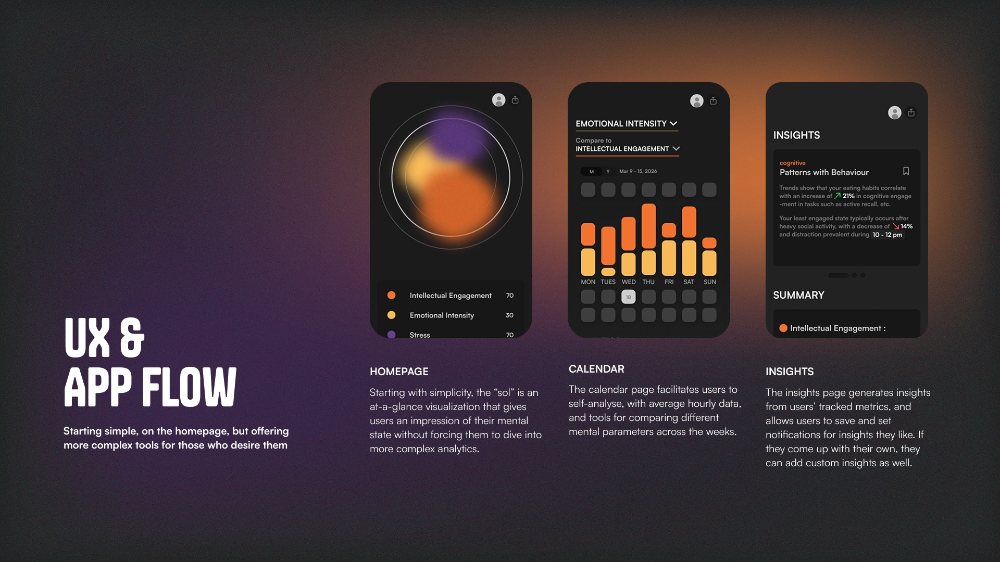
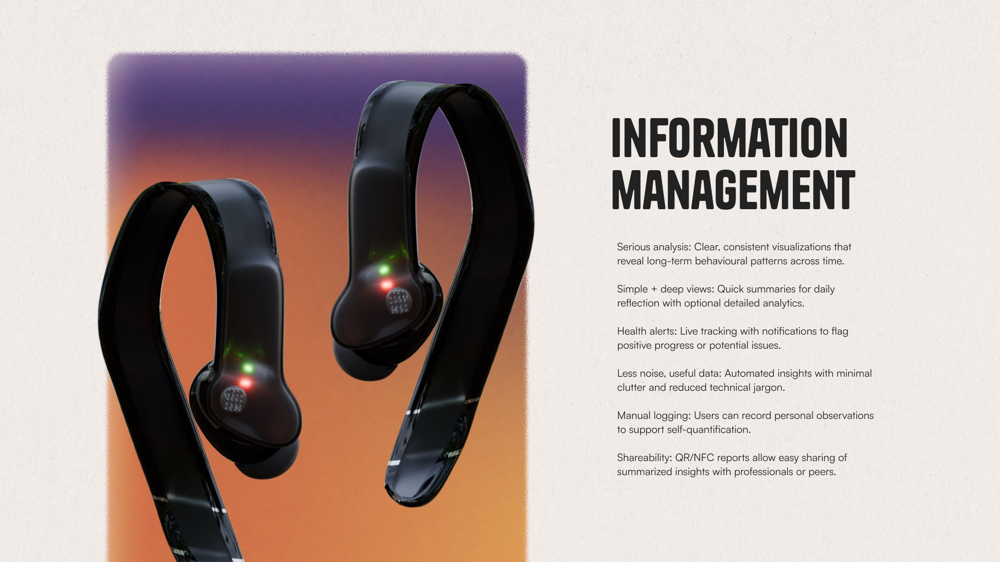
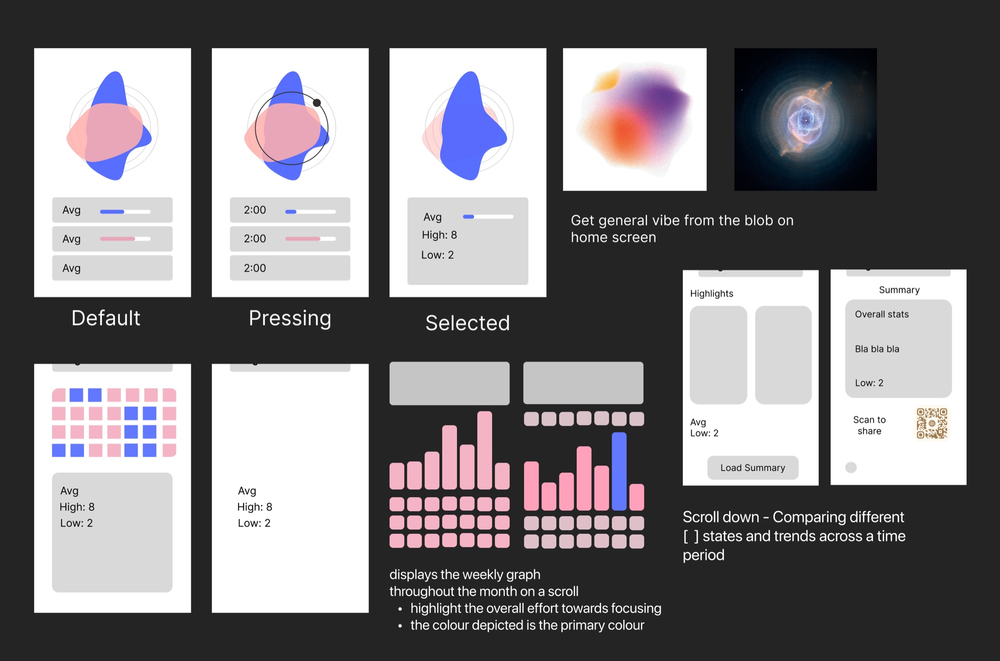

Experimental health app Sol
- Event
- Figbuild 2026
- Role
- UX Researcher
- Visual Designer
- Interaction Designer
- Timeline
- 72 hours, Spring 2026
- Tools
- Figma
- Photoshop
Developing a visual representation of the mind and its decisions, making cognitive self-awareness measurable.
This was a three-day designathon hosted by Figma, where each team of three was expected to develop a tool that tracks, measures, visualizes, or quantifies an aspect of the human sensory experience. Teams were encouraged to design beyond what is technologically possible, imagining what future trackers may look like.

The Concept
Giving shape to the way you think and feel
Our team was inspired by the growing concern surrounding the rise of artificial intelligence. While AI tools have increased efficiency and access to information, they've left a gap in people's abilities to engage their minds critically. We wanted to solve how someone could be more mentally active in their thinking. Our app helps people become more aware of their critical thinking skills while understanding themselves emotionally, highlighting whether users are thinking with their head or feeling with their heart.





My Role
Research first, polish second
My contributions consist of ideation, cognitive research, and overall product design. We began by narrowing our scope, guided by extensive research across many concepts. Our goal was to communicate a sensory type that wasn't widely understood but resonated with all of us. Only then did we design how the tool could work, prioritising being informative over visual polish.

Problem
Designing for others, not ourselves
An early challenge was reconciling each member's conflicting views on which sensory type to focus on. This decision formed the backbone of our project, and as we researched key systems, we naturally gravitated toward some concepts over others. A part of being a good designer is working selflessly, understanding who the demographic might be and their needs. So despite the pull toward ideas we personally favoured, our team aligned around cognitive engagement, because it resonated most strongly with young people.

Reflection
End result
This project is an outline of technical performance and creative values centered around people and their wellbeing. My goal is to build sustainable practices that benefit society.